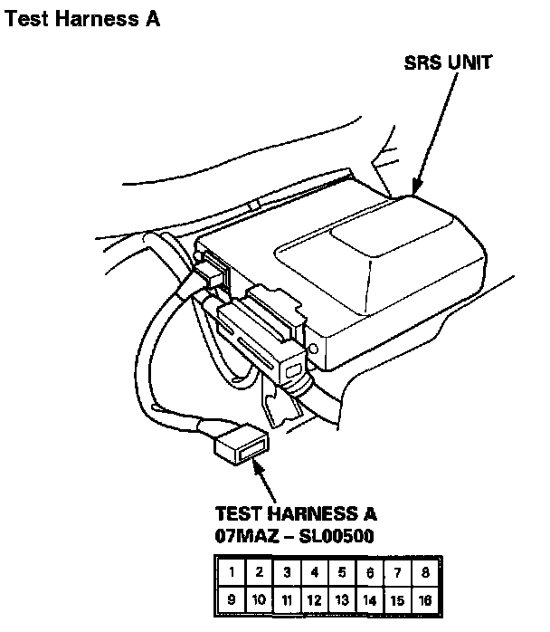
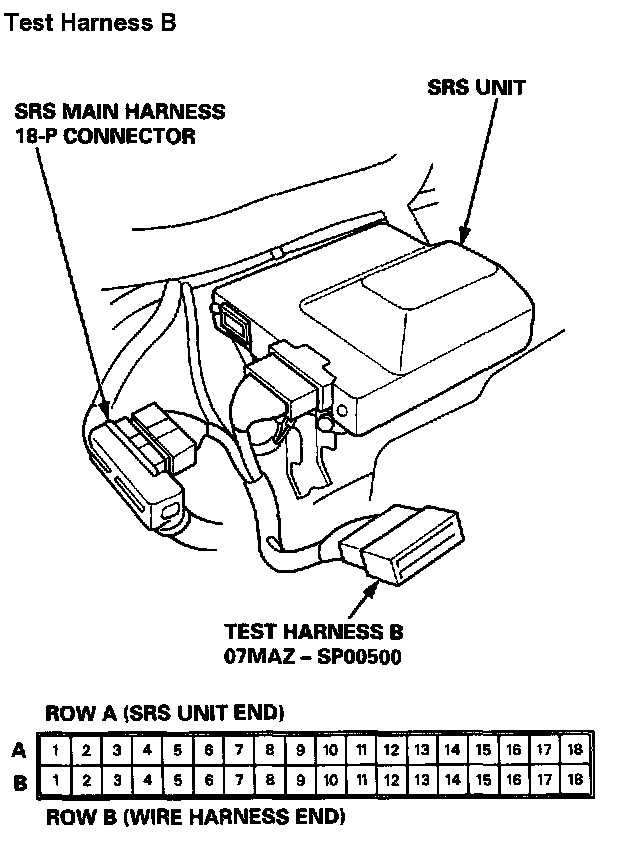
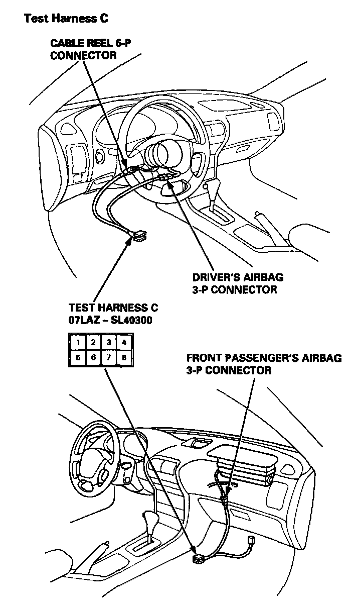
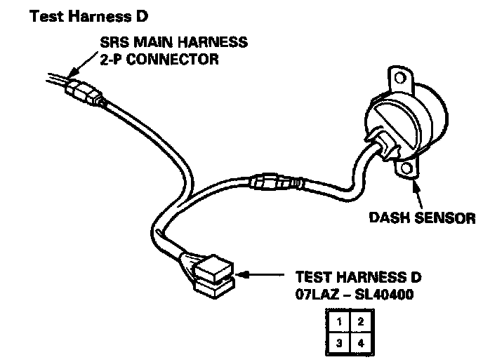

Operation CHARM
: Car repair manuals for everyone.
Home
>>
Acura
>>
1994
>>
Integra (RS, LS) L4-1834cc 1.8L DOHC FI
>>
Repair and Diagnosis
>>
Restraints and Safety Systems
>>
Air Bag Systems
>>
Testing and Inspection
>>
Component Tests and General Diagnostics
>>
Test Harnesses and Attachment Points
Test Harnesses and Attachment Points
TEST HARNESSES AND ATTACHMENT POINTS

Test Harness A

Test Harness B

Test Harness C

Test Harness D